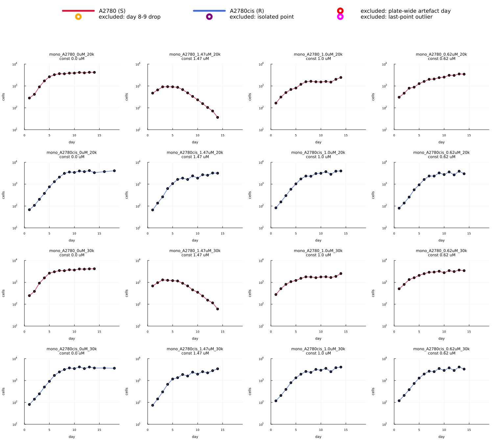
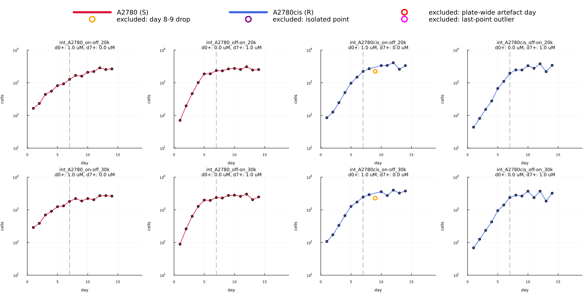
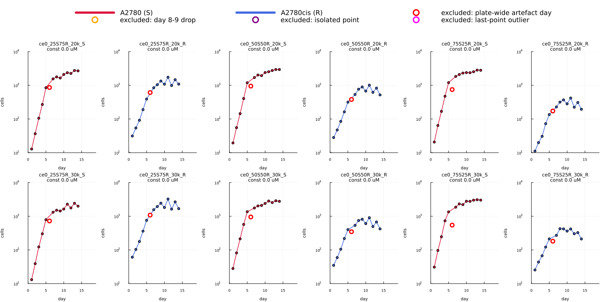
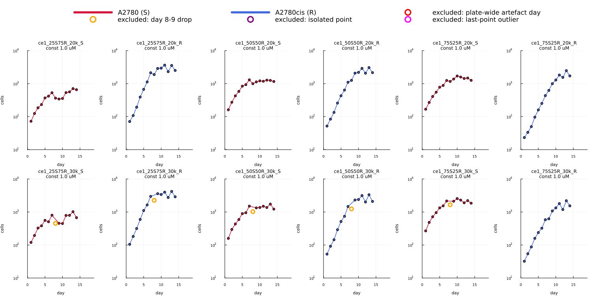
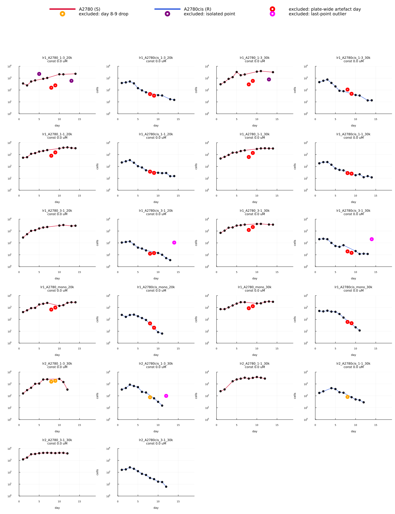

All 20k and 30k A2780 / A2780cis data in the repo is used. Where raw per-image files exist, day means are rebuilt from per-well values so bad wells can be caught. Pre-averaged files that duplicate the raw data are not loaded twice.
| data | status | note |
|---|---|---|
| Untreated monoculture 20k + 30k (Processed_Datasets/Untreated MonoCulture/{20k,30k}) | USED (rebuilt from per-image data) | A2780cis runs to day 18 (days 16, 18 are extra vs New Datasets); wells: row A = 20k, B = 30k |
| Treated monoculture 20k + 30k, IC25/IC50/IC75 folders = 1.47 / 1.0 / 0.62 uM | USED (rebuilt from per-image data) | 3 wells × 6 tiles per day; rows A/C = 20k, B/D = 30k |
| Intermittent 20k + 30k (on→off, off→on at 1 uM) | USED (rebuilt from per-image data) | rows A/C = 20k, B/D = 30k |
| Untreated co-culture, raw flat files (legacy), plate columns 1-3 = 20k, 4-6 = 30k | USED (rebuilt by well column) | 3 wells per ratio and density |
| Treated co-culture (1 uM), raw flat files (legacy), plate columns 1-3 = 20k, 4-6 = 30k | USED as held-out validation (rebuilt by well column) | 3 wells per ratio and density |
| LR workbook: run 1 (20k + 30k), run 2 (30k) | USED (no raw images exist) | workbook day 0 is a nominal seeding and is not loaded; every LR series' day-1 count is > 3-fold above nominal, so its starting value is estimated |
| New Datasets A2780*_30k.csv (8 files) | not loaded: identical to the raw monoculture day means (max rel. diff < 1e-6); their day 0 (≈100) is the nominal seeding, not a measurement | |
| New Datasets ce0_*/ce1_* workbooks | not loaded: identical to the column-4-6 rebuild, except ce0 75S25R resistant (~20% lower, different threshold) and one day-6 value | |
| Processed_Datasets co-culture 20k/30k Averages | not loaded: split by imaging tile instead of well column, so each 'density' mixes 20k and 30k wells; the same raw files are re-split correctly by column above | |
| TykNu (all densities); 40k | excluded (out of scope) | |
| New Datasets/Validation (LR + cisplatin) | excluded (user decision) |
1. Well level (raw sources): a well-day is dropped if that well jumps > 2-fold against its own previous/next day while the other wells move < 1.5-fold (a single bad image set). Wells that are consistently high or low (seeding differences) are kept. 3 well-days removed; see excluded_well_days.csv.
2. Plate-wide artefact days: on each plate/experiment with ≥ 3 series, a day is removed for every series when the median dip against neighbouring days is below -0.25 (log), re-checked after each removal so two-day dips are found.
3. Single points: a last point > 2.5-fold off trend (only if the point before is on trend), and interior points > 2-fold above or below both neighbours (at most two per series).
4. Day 8-9 drops: in every series, day 8 and/or 9 is removed only when it lies more than 0.25 (log) below the line joining the nearest remaining days before day 8 and after day 9.
| rule | points | trajectories |
|---|---|---|
| plate-wide artefact day (LR run 1) | 30 | 15 |
| plate-wide artefact day (co-culture untreated) | 12 | 12 |
| day 8-9 drop (below the day-7 to day-10 line) | 11 | 10 |
| isolated point (>2x vs both neighbours) | 3 | 2 |
| last-point outlier (>2.5x off trend) | 3 | 3 |
| traj_id | day | well | value | rule |
|---|---|---|---|---|
| ce0_75S25R_20k_S | 7 | B1 | 1687 | well spike (>2x vs own neighbours) |
| ce0_75S25R_30k_R | 12 | C4 | 774.9 | well spike (>2x vs own neighbours) |
| ce1_25S75R_30k_S | 13 | C6 | 2395 | well spike (>2x vs own neighbours) |
Day 0 is not a measurement (user, 2026-10-07). Every series starts at t = 0 from its nominal seeding: 100 cells per 30k well, 66.7 per 20k well, times the line's share in a coculture (25:75 → 25 and 75). The starting value is estimated (a free parameter) only for a series whose first kept count (day d, normally 1) is more than 3d-fold above or below nominal — the rule of the mechanistic zoo (zoo_data.jl x0_info, bounds [n0/10, 3·max(n0, first count)]). 27 training series have an estimated start (every low-resource series: their day-1 counts are 3–12× nominal). Held-out series always start from the nominal seeding, as in the zoo's validation.
| traj_id | split | seeding_k | nominal_start | first_day | first_count | ratio_first_to_nominal | start |
|---|---|---|---|---|---|---|---|
| mono_A2780_0uM_20k | train | 20 | 66.67 | 1 | 280.7 | 4.21 | estimated (training) |
| mono_A2780_1.47uM_20k | train | 20 | 66.67 | 1 | 470.4 | 7.056 | estimated (training) |
| mono_A2780_1.0uM_20k | train | 20 | 66.67 | 1 | 164.8 | 2.473 | nominal |
| mono_A2780_0.62uM_20k | train | 20 | 66.67 | 1 | 305.2 | 4.578 | estimated (training) |
| int_A2780_on-off_20k | train | 20 | 66.67 | 1 | 164.7 | 2.471 | nominal |
| int_A2780_off-on_20k | train | 20 | 66.67 | 1 | 70.99 | 1.065 | nominal |
| mono_A2780cis_0uM_20k | train | 20 | 66.67 | 1 | 67.72 | 1.016 | nominal |
| mono_A2780cis_1.47uM_20k | train | 20 | 66.67 | 1 | 66.08 | 0.9911 | nominal |
| mono_A2780cis_1.0uM_20k | train | 20 | 66.67 | 1 | 82.57 | 1.239 | nominal |
| mono_A2780cis_0.62uM_20k | train | 20 | 66.67 | 1 | 79.83 | 1.197 | nominal |
| int_A2780cis_on-off_20k | train | 20 | 66.67 | 1 | 84.96 | 1.274 | nominal |
| int_A2780cis_off-on_20k | train | 20 | 66.67 | 1 | 43.8 | 0.657 | nominal |
| mono_A2780_0uM_30k | train | 30 | 100 | 1 | 246.9 | 2.469 | nominal |
| mono_A2780_1.47uM_30k | train | 30 | 100 | 1 | 683.1 | 6.831 | estimated (training) |
| mono_A2780_1.0uM_30k | train | 30 | 100 | 1 | 277.2 | 2.772 | nominal |
| mono_A2780_0.62uM_30k | train | 30 | 100 | 1 | 507.5 | 5.075 | estimated (training) |
| int_A2780_on-off_30k | train | 30 | 100 | 1 | 289 | 2.89 | nominal |
| int_A2780_off-on_30k | train | 30 | 100 | 1 | 89.01 | 0.8901 | nominal |
| mono_A2780cis_0uM_30k | train | 30 | 100 | 1 | 80.44 | 0.8044 | nominal |
| mono_A2780cis_1.47uM_30k | train | 30 | 100 | 1 | 73.88 | 0.7388 | nominal |
| mono_A2780cis_1.0uM_30k | train | 30 | 100 | 1 | 117.6 | 1.176 | nominal |
| mono_A2780cis_0.62uM_30k | train | 30 | 100 | 1 | 119.1 | 1.191 | nominal |
| int_A2780cis_on-off_30k | train | 30 | 100 | 1 | 107.9 | 1.079 | nominal |
| int_A2780cis_off-on_30k | train | 30 | 100 | 1 | 68.51 | 0.6851 | nominal |
| ce0_25S75R_20k_S | train | 20 | 16.67 | 1 | 12.81 | 0.7684 | nominal |
| ce0_25S75R_20k_R | train | 20 | 50 | 1 | 31.28 | 0.6256 | nominal |
| ce0_50S50R_20k_S | train | 20 | 33.33 | 1 | 19.43 | 0.583 | nominal |
| ce0_50S50R_20k_R | train | 20 | 33.33 | 1 | 28.17 | 0.845 | nominal |
| ce0_75S25R_20k_S | train | 20 | 50 | 1 | 20.69 | 0.4137 | nominal |
| ce0_75S25R_20k_R | train | 20 | 16.67 | 1 | 11.14 | 0.6682 | nominal |
| ce1_25S75R_20k_S | validation_treated_co | 20 | 16.67 | 1 | 72.36 | 4.342 | nominal (held out: never estimated from held-out data) |
| ce1_25S75R_20k_R | validation_treated_co | 20 | 50 | 1 | 71.14 | 1.423 | nominal |
| ce1_50S50R_20k_S | validation_treated_co | 20 | 33.33 | 1 | 161.1 | 4.833 | nominal (held out: never estimated from held-out data) |
| ce1_50S50R_20k_R | validation_treated_co | 20 | 33.33 | 1 | 51.78 | 1.553 | nominal |
| ce1_75S25R_20k_S | validation_treated_co | 20 | 50 | 1 | 167.5 | 3.35 | nominal (held out: never estimated from held-out data) |
| ce1_75S25R_20k_R | validation_treated_co | 20 | 16.67 | 1 | 23.23 | 1.394 | nominal |
| ce0_25S75R_30k_S | train | 30 | 25 | 1 | 13.09 | 0.5235 | nominal |
| ce0_25S75R_30k_R | train | 30 | 75 | 1 | 61.05 | 0.814 | nominal |
| ce0_50S50R_30k_S | train | 30 | 50 | 1 | 28.16 | 0.5631 | nominal |
| ce0_50S50R_30k_R | train | 30 | 50 | 1 | 34.93 | 0.6986 | nominal |
| ce0_75S25R_30k_S | train | 30 | 75 | 1 | 30.92 | 0.4122 | nominal |
| ce0_75S25R_30k_R | train | 30 | 25 | 1 | 25.47 | 1.019 | nominal |
| ce1_25S75R_30k_S | validation_treated_co | 30 | 25 | 1 | 119.5 | 4.782 | nominal (held out: never estimated from held-out data) |
| ce1_25S75R_30k_R | validation_treated_co | 30 | 75 | 1 | 104.9 | 1.398 | nominal |
| ce1_50S50R_30k_S | validation_treated_co | 30 | 50 | 1 | 158.6 | 3.173 | nominal (held out: never estimated from held-out data) |
| ce1_50S50R_30k_R | validation_treated_co | 30 | 50 | 1 | 52.87 | 1.057 | nominal |
| ce1_75S25R_30k_S | validation_treated_co | 30 | 75 | 1 | 267.5 | 3.567 | nominal (held out: never estimated from held-out data) |
| ce1_75S25R_30k_R | validation_treated_co | 30 | 25 | 1 | 32.15 | 1.286 | nominal |
| lr1_A2780_1-3_20k | train | 20 | 16.67 | 1 | 355.3 | 21.32 | estimated (training) |
| lr1_A2780cis_1-3_20k | train | 20 | 50 | 1 | 387.9 | 7.758 | estimated (training) |
| lr1_A2780_1-3_30k | train | 30 | 25 | 1 | 304.3 | 12.17 | estimated (training) |
| lr1_A2780cis_1-3_30k | train | 30 | 75 | 1 | 461.4 | 6.153 | estimated (training) |
| lr1_A2780_1-1_20k | train | 20 | 33.33 | 1 | 546 | 16.38 | estimated (training) |
| lr1_A2780cis_1-1_20k | train | 20 | 33.33 | 1 | 217.1 | 6.513 | estimated (training) |
| lr1_A2780_1-1_30k | train | 30 | 50 | 1 | 466.9 | 9.338 | estimated (training) |
| lr1_A2780cis_1-1_30k | train | 30 | 50 | 1 | 183.5 | 3.669 | estimated (training) |
| lr1_A2780_3-1_20k | train | 20 | 50 | 1 | 285.4 | 5.708 | estimated (training) |
| lr1_A2780cis_3-1_20k | train | 20 | 16.67 | 1 | 107.4 | 6.442 | estimated (training) |
| lr1_A2780_3-1_30k | train | 30 | 75 | 1 | 704.5 | 9.394 | estimated (training) |
| lr1_A2780cis_3-1_30k | train | 30 | 25 | 1 | 206.8 | 8.271 | estimated (training) |
| lr1_A2780_mono_20k | train | 20 | 66.67 | 1 | 412 | 6.181 | estimated (training) |
| lr1_A2780cis_mono_20k | train | 20 | 66.67 | 1 | 238.8 | 3.582 | estimated (training) |
| lr1_A2780_mono_30k | train | 30 | 100 | 1 | 725.6 | 7.256 | estimated (training) |
| lr1_A2780cis_mono_30k | train | 30 | 100 | 1 | 512.8 | 5.128 | estimated (training) |
| lr2_A2780_1-3_30k | train | 30 | 25 | 1 | 159.3 | 6.373 | estimated (training) |
| lr2_A2780cis_1-3_30k | train | 30 | 75 | 1 | 339.5 | 4.527 | estimated (training) |
| lr2_A2780_1-1_30k | train | 30 | 50 | 1 | 245.3 | 4.906 | estimated (training) |
| lr2_A2780cis_1-1_30k | train | 30 | 50 | 1 | 175.4 | 3.509 | estimated (training) |
| lr2_A2780_3-1_30k | train | 30 | 75 | 1 | 1222 | 16.3 | estimated (training) |
| lr2_A2780cis_3-1_30k | train | 30 | 25 | 1 | 160.5 | 6.419 | estimated (training) |
ce1 treated co-culture is held out; the loader asserts it never appears in training. Untreated co-culture is used only for competition coefficients.
| split | role | source | plate | line | resource | culture | trajectories | points |
|---|---|---|---|---|---|---|---|---|
| train | competition | ce0 | co-culture untreated | R | normal | co | 6 | 78 |
| train | competition | ce0 | co-culture untreated | S | normal | co | 6 | 78 |
| train | competition | lr | LR run 1 | R | low | co | 6 | 68 |
| train | competition | lr | LR run 1 | S | low | co | 6 | 65 |
| train | competition | lr | LR run 2 | R | low | co | 3 | 32 |
| train | competition | lr | LR run 2 | S | low | co | 3 | 33 |
| train | drug | intermittent | intermittent | R | normal | mono | 4 | 54 |
| train | drug | intermittent | intermittent | S | normal | mono | 4 | 56 |
| train | drug | lr | LR run 1 | R | low | mono | 2 | 18 |
| train | drug | lr | LR run 1 | S | low | mono | 2 | 24 |
| train | drug | mono | mono 1 + 0.62uM | R | normal | mono | 4 | 56 |
| train | drug | mono | mono 1 + 0.62uM | S | normal | mono | 4 | 56 |
| train | drug | mono | mono 1.47uM (A2780) | S | normal | mono | 2 | 28 |
| train | drug | mono | mono 1.47uM (A2780cis) | R | normal | mono | 2 | 28 |
| train | drug | mono | mono untreated | R | normal | mono | 2 | 32 |
| train | drug | mono | mono untreated | S | normal | mono | 2 | 28 |
| validation_treated_co | validation | ce1 | co-culture treated | R | normal | co | 6 | 82 |
| validation_treated_co | validation | ce1 | co-culture treated | S | normal | co | 6 | 81 |
Ratio of 30k to 20k day means for the same condition at days 1, 7 and 14. Seeding ratio is 1.5; a ratio falling towards 1 by day 14 means both densities approach the same carrying capacity (the model's initial condition carries density; K and rates are shared unless the fits say otherwise).
| source | line | schedule | s_frac | resource | day | ratio_30k_over_20k |
|---|---|---|---|---|---|---|
| mono | S | const 0.0 uM | 1 | normal | 1 | 0.8795 |
| mono | S | const 0.0 uM | 1 | normal | 7 | 0.9509 |
| mono | S | const 0.0 uM | 1 | normal | 14 | 0.9938 |
| mono | S | const 1.47 uM | 1 | normal | 1 | 1.452 |
| mono | S | const 1.47 uM | 1 | normal | 7 | 1.332 |
| mono | S | const 1.47 uM | 1 | normal | 14 | 1.65 |
| mono | S | const 1.0 uM | 1 | normal | 1 | 1.682 |
| mono | S | const 1.0 uM | 1 | normal | 7 | 1.141 |
| mono | S | const 1.0 uM | 1 | normal | 14 | 1.031 |
| mono | S | const 0.62 uM | 1 | normal | 1 | 1.663 |
| mono | S | const 0.62 uM | 1 | normal | 7 | 1.436 |
| mono | S | const 0.62 uM | 1 | normal | 14 | 0.99 |
| intermittent | S | d0+: 1.0 uM, d7+: 0.0 uM | 1 | normal | 1 | 1.755 |
| intermittent | S | d0+: 1.0 uM, d7+: 0.0 uM | 1 | normal | 7 | 1.426 |
| intermittent | S | d0+: 1.0 uM, d7+: 0.0 uM | 1 | normal | 14 | 0.9898 |
| intermittent | S | d0+: 0.0 uM, d7+: 1.0 uM | 1 | normal | 1 | 1.254 |
| intermittent | S | d0+: 0.0 uM, d7+: 1.0 uM | 1 | normal | 7 | 1.005 |
| intermittent | S | d0+: 0.0 uM, d7+: 1.0 uM | 1 | normal | 14 | 0.9795 |
| mono | R | const 0.0 uM | 0 | normal | 1 | 1.188 |
| mono | R | const 0.0 uM | 0 | normal | 7 | 1.18 |
| mono | R | const 0.0 uM | 0 | normal | 14 | 1.114 |
| mono | R | const 1.47 uM | 0 | normal | 1 | 1.118 |
| mono | R | const 1.47 uM | 0 | normal | 7 | 0.9963 |
| mono | R | const 1.47 uM | 0 | normal | 14 | 1.083 |
| mono | R | const 1.0 uM | 0 | normal | 1 | 1.424 |
| mono | R | const 1.0 uM | 0 | normal | 7 | 1.106 |
| mono | R | const 1.0 uM | 0 | normal | 14 | 1.026 |
| mono | R | const 0.62 uM | 0 | normal | 1 | 1.492 |
| mono | R | const 0.62 uM | 0 | normal | 7 | 1.137 |
| mono | R | const 0.62 uM | 0 | normal | 14 | 1.114 |
| intermittent | R | d0+: 1.0 uM, d7+: 0.0 uM | 0 | normal | 1 | 1.27 |
| intermittent | R | d0+: 1.0 uM, d7+: 0.0 uM | 0 | normal | 7 | 1.109 |
| intermittent | R | d0+: 1.0 uM, d7+: 0.0 uM | 0 | normal | 14 | 1.117 |
| intermittent | R | d0+: 0.0 uM, d7+: 1.0 uM | 0 | normal | 1 | 1.564 |
| intermittent | R | d0+: 0.0 uM, d7+: 1.0 uM | 0 | normal | 7 | 1.221 |
| intermittent | R | d0+: 0.0 uM, d7+: 1.0 uM | 0 | normal | 14 | 0.9458 |
| ce0 | S | const 0.0 uM | 0.25 | normal | 1 | 1.022 |
| ce0 | S | const 0.0 uM | 0.25 | normal | 7 | 0.8488 |
| ce0 | S | const 0.0 uM | 0.25 | normal | 14 | 0.7437 |
| ce0 | R | const 0.0 uM | 0.25 | normal | 1 | 1.952 |
| ce0 | R | const 0.0 uM | 0.25 | normal | 7 | 1.854 |
| ce0 | R | const 0.0 uM | 0.25 | normal | 14 | 1.552 |
| ce0 | S | const 0.0 uM | 0.5 | normal | 1 | 1.449 |
| ce0 | S | const 0.0 uM | 0.5 | normal | 7 | 1.039 |
| ce0 | S | const 0.0 uM | 0.5 | normal | 14 | 0.9443 |
| ce0 | R | const 0.0 uM | 0.5 | normal | 1 | 1.24 |
| ce0 | R | const 0.0 uM | 0.5 | normal | 7 | 1.006 |
| ce0 | R | const 0.0 uM | 0.5 | normal | 14 | 0.8135 |
| ce0 | S | const 0.0 uM | 0.75 | normal | 1 | 1.495 |
| ce0 | S | const 0.0 uM | 0.75 | normal | 7 | 1.017 |
| ce0 | S | const 0.0 uM | 0.75 | normal | 14 | 1.08 |
| ce0 | R | const 0.0 uM | 0.75 | normal | 1 | 2.287 |
| ce0 | R | const 0.0 uM | 0.75 | normal | 7 | 1.193 |
| ce0 | R | const 0.0 uM | 0.75 | normal | 14 | 1.09 |
| ce1 | S | const 1.0 uM | 0.25 | normal | 1 | 1.652 |
| ce1 | S | const 1.0 uM | 0.25 | normal | 7 | 1.507 |
| ce1 | S | const 1.0 uM | 0.25 | normal | 14 | 1.027 |
| ce1 | R | const 1.0 uM | 0.25 | normal | 1 | 1.474 |
| ce1 | R | const 1.0 uM | 0.25 | normal | 7 | 1.39 |
| ce1 | R | const 1.0 uM | 0.25 | normal | 14 | 1.15 |
| ce1 | S | const 1.0 uM | 0.5 | normal | 1 | 0.9848 |
| ce1 | S | const 1.0 uM | 0.5 | normal | 7 | 1.157 |
| ce1 | S | const 1.0 uM | 0.5 | normal | 14 | 1.054 |
| ce1 | R | const 1.0 uM | 0.5 | normal | 1 | 1.021 |
| ce1 | R | const 1.0 uM | 0.5 | normal | 7 | 1.328 |
| ce1 | R | const 1.0 uM | 0.5 | normal | 14 | 0.9714 |
| ce1 | S | const 1.0 uM | 0.75 | normal | 1 | 1.597 |
| ce1 | S | const 1.0 uM | 0.75 | normal | 7 | 1.727 |
| ce1 | S | const 1.0 uM | 0.75 | normal | 14 | 1.467 |
| ce1 | R | const 1.0 uM | 0.75 | normal | 1 | 1.384 |
| ce1 | R | const 1.0 uM | 0.75 | normal | 7 | 1.342 |
| ce1 | R | const 1.0 uM | 0.75 | normal | 14 | 0.8944 |
| lr | S | const 0.0 uM | 0.25 | low | 1 | 0.8565 |
| lr | S | const 0.0 uM | 0.25 | low | 7 | 1.967 |
| lr | S | const 0.0 uM | 0.25 | low | 14 | 1.366 |
| lr | R | const 0.0 uM | 0.25 | low | 1 | 1.19 |
| lr | R | const 0.0 uM | 0.25 | low | 7 | 1.239 |
| lr | R | const 0.0 uM | 0.25 | low | 14 | 0.919 |
| lr | S | const 0.0 uM | 0.5 | low | 1 | 0.8551 |
| lr | S | const 0.0 uM | 0.5 | low | 7 | 0.9504 |
| lr | S | const 0.0 uM | 0.5 | low | 14 | 0.9518 |
| lr | R | const 0.0 uM | 0.5 | low | 1 | 0.8452 |
| lr | R | const 0.0 uM | 0.5 | low | 7 | 0.981 |
| lr | R | const 0.0 uM | 0.5 | low | 14 | 0.7757 |
| lr | S | const 0.0 uM | 0.75 | low | 1 | 2.468 |
| lr | S | const 0.0 uM | 0.75 | low | 7 | 1.585 |
| lr | S | const 0.0 uM | 0.75 | low | 14 | 1.231 |
| lr | R | const 0.0 uM | 0.75 | low | 1 | 1.926 |
| lr | R | const 0.0 uM | 0.75 | low | 7 | 2.727 |
| lr | S | const 0.0 uM | 1 | low | 1 | 1.761 |
| lr | S | const 0.0 uM | 1 | low | 7 | 1.152 |
| lr | S | const 0.0 uM | 1 | low | 14 | 1.098 |
| lr | R | const 0.0 uM | 0 | low | 1 | 2.147 |
| lr | R | const 0.0 uM | 0 | low | 7 | 1.592 |





Intermittent: T = 1 uM days 1–7 then off; UT = off then 1 uM days 8–14 (Understanding.md, Well Layouts). Treated monoculture folders IC25 / IC50 / IC75 = 1.47 / 1.0 / 0.62 uM (identical to the New Datasets files named with those doses). Co-culture ratios are sensitive:resistant at seeding; columns 1/4 = 75/25, 2/5 = 50/50, 3/6 = 25/75 (20k/30k). Day 0 is not a measurement: every series starts from its nominal seeding (100 per 30k well, 66.7 per 20k well, split by ratio), estimated only where the first count is more than 3d-fold off (see Starting values). Intermittent values are cell counts (already normalised to cell size).